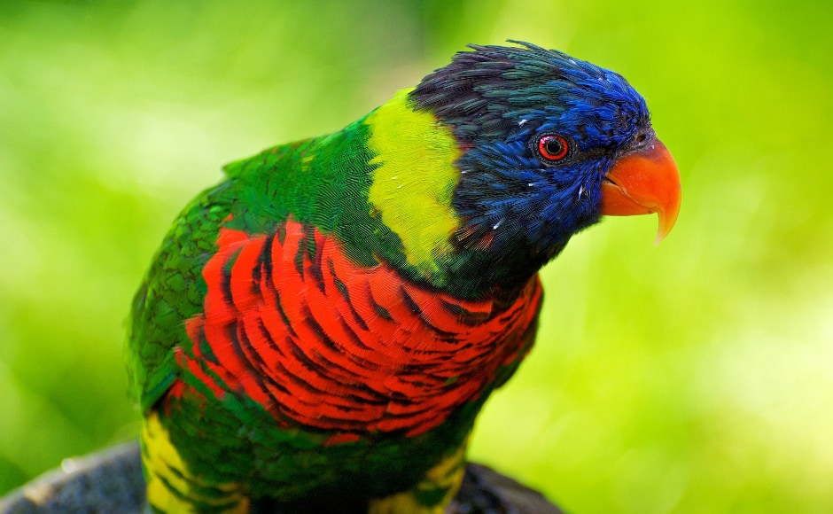
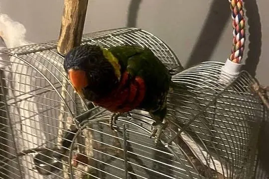
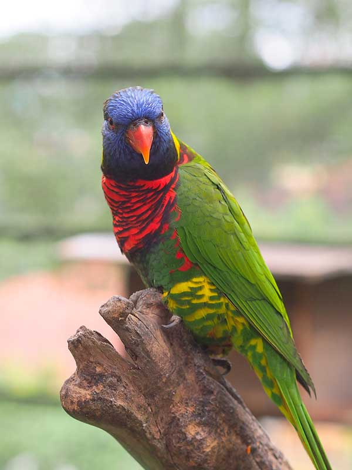

Pochodzenie
Australia, Nowa Gwinea, Indonezja
Długość
25–30 cm
Długość życia
15–25 lat
Tryb życia
Dzienny, stadny
Cechy szczególne
Bardzo kolorowe upierzenie i specjalny język do nektaru
Kolorowa papuga – wymagający i aktywny gatunek

Australia, Nowa Gwinea, Indonezja
25–30 cm
15–25 lat
Dzienny, stadny
Bardzo kolorowe upierzenie i specjalny język do nektaru
Lorysy górskie są jednymi z najbardziej kolorowych papug – mają mieszankę czerwieni, zieleni, niebieskiego i pomarańczowego. Ich język jest szczotkowaty, przystosowany do pobierania nektaru z kwiatów.

20–28°C
Bardzo wysoka – potrzebuje dużo ruchu
Głośna, ale mniej niż kakadu
Silnie stadna – nie lubi samotności

Lorysy są bardzo aktywne, ciekawskie i towarzyskie. Uwielbiają kontakt z człowiekiem, ale wymagają codziennej uwagi. Mogą być hałaśliwe i bardzo energiczne.
Wymaga codziennej interakcji – szybko się nudzi